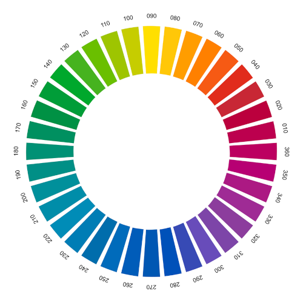
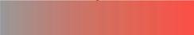
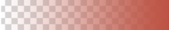
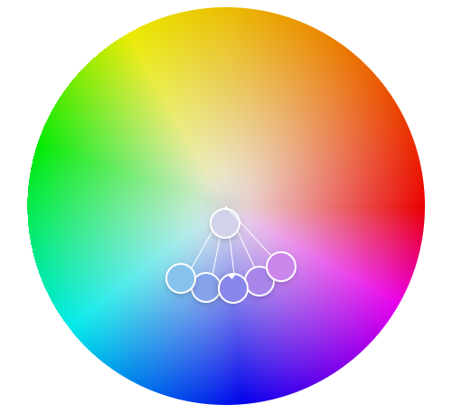

Representação de Cores
Todas as cores em uma tela são representadas por três cores base:
- Vermelho: representado pelo R;
- Verde: representado pelo G;
- Azul: representado pelo B.
Essas cores formam a sigla RGB. Note que o verde substitui o amarelo como cor primária, pois tecnicamente as cores são mais precisas usando o verde.
Existem três formas de representar cores em CSS:
Por nomes das cores em inglês
Essa forma é menos utilizada devido à limitação de nomes disponíveis em comparação com a vasta quantidade de cores possíveis (65.000.000).
Por código RGB ou RGBA
O sistema RGB é uma forma de representar cores usando três valores numéricos que variam de 0 a 255. Cada valor representa a intensidade de uma das cores do RGB (vermelho, verde e azul). No sistema RGB, 0 representa a menor intensidade e 255 representa a maior intensidade da cor. Além disso, o valor alpha (transparência) varia de 1 (totalmente opaco) a 0 (totalmente transparente) com precisão de centésimos.
Hexadecimal
O sistema hexadecimal é uma forma de representar cores usando uma combinação de seis ou oito caracteres, que vão de 0 a F (0, 1, 2, 3, 4, 5, 6, 7, 8, 9, a, b, c, d, e, f). Cada par de caracteres representa a intensidade de uma das cores do RGB (vermelho, verde e azul) ou a transparência (alpha). No sistema hexadecimal, 0 representa a menor intensidade e F representa a maior intensidade da cor.
- Com 6 dígitos: Cada cor é representada por dois dígitos hexadecimais, variando de 00 a FF.
- Os dois primeiros dígitos representam a quantidade de vermelho (Red).
- Os dois dígitos do meio representam a quantidade de verde (Green).
- Os dois últimos dígitos representam a quantidade de azul (Blue).
- Com 3 dígitos: Uma forma abreviada onde cada dígito é duplicado para formar a cor completa.
- O primeiro dígito representa a quantidade de vermelho (Red).
- O segundo dígito representa a quantidade de verde (Green).
- O terceiro dígito representa a quantidade de azul (Blue).
- Com 8 dígitos: Além das cores RGB, inclui dois dígitos para a transparência (alpha), variando de 00 (totalmente transparente) a FF (totalmente opaco).
- Os dois primeiros dígitos representam a quantidade de vermelho (Red).
- Os dois dígitos seguintes representam a quantidade de verde (Green).
- Os dois dígitos seguintes representam a quantidade de azul (Blue).
- Os dois últimos dígitos representam a transparência (Alpha).
Exemplos de representação:
#C8FF00 (6 dígitos)
#CF0 (3 dígitos)
#C8FF00FF (8 dígitos)
HSL ou HSLA
O modelo HSLA é uma extensão do modelo HSL (Hue, Saturation, Lightness), com a adição de um canal de transparência (Alpha). Ele é representado no formato:
hsla(H, S%, L%, A)
Onde:
- H: Cor propriamente dita (0 a 360). É um valor numérico em graus (de 0 a 360) que corresponde a uma posição no círculo cromático:
- 0: Vermelho.
- 120: Verde.
- 240: Azul.
- 360: Volta ao vermelho.

- S: Representa a saturação da cor, ou seja, o quão pura ela é. É um valor percentual onde:
- 0%: Cor completamente desaturada (tons de cinza)
- 100%: Cor totalmente saturada (viva e intensa).

- L: Representa a luminosidade da cor, ou seja, o quão clara ou escura ela é. Também é um valor percentual onde:
- 0%: Preto (sem luz).
- 50%: Cor normal.
- 100%: Branco (máxima luz).
- A: Representa a transparência da cor. É um valor decimal entre 0 e 1:
- 0: Totalmente transparente.
- 1: Totalmente opaco.

Exemplo de representação:
hsla(350, 50%, 50%, 0.99)
Psicologia das Cores
As cores têm um impacto psicológico nas pessoas, podendo influenciar o humor, a percepção e a tomada de decisões. Por isso, é importante escolher as cores certas para transmitir a mensagem desejada.
Algumas cores e seus significados:
- Vermelho: paixão, amor, perigo, energia;
- Verde: natureza, saúde, esperança, crescimento;
- Azul: tranquilidade, confiança, segurança, tecnologia;
- Amarelo: alegria, otimismo, criatividade, calor;
- Roxo: luxo, espiritualidade, mistério, realeza;
- Laranja: entusiasmo, energia, diversão, criatividade;
- Rosa: amor, feminilidade, doçura, romance;
- Marrom: estabilidade, segurança, natureza, simplicidade;
- Cinza: neutralidade, equilíbrio, sofisticação, formalidade;
- Preto: elegância, poder, sofisticação, mistério;
- Branco: pureza, inocência, limpeza, simplicidade.
Para mais detalhes, consulte o material em PDF das páginas 02 a 06.
Harmonização de Cores
Para criar um site visualmente agradável, é importante harmonizar as cores. Existem várias formas de fazer isso:
- Usar cores complementares;
- Usar cores análogas;
- Usar cores triádicas;
- Usar cores tetrádicas.
Obs.: Um site deve ter no máximo entre 3 e 5 cores, além do preto e branco.
Para mais detalhes, consulte o material em PDF das páginas 07 a 09.
Círculo Cromático
O círculo cromático é uma ferramenta que ajuda a encontrar combinações harmoniosas de cores, tornando o site visualmente agradável.

Para mais detalhes, consulte o material em PDF das páginas 06 a 11.
Sites para encontrar cores harmônicas
Existem ferramentas online que ajudam na escolha de paletas de cores:
- Adobe Color: Excelente site com alguns recursos pagos.
- Paletton: Permite escolher o tipo de harmonização e visualizar exemplos.
- Coolors: Ideal para criar combinações de cores, com opção de travar cores favoritas.
Ferramenta para descobrir cores de outros sites
Para capturar o código hexadecimal de uma cor em um site, use a extensão ColorZilla no Google Chrome. Clique na cor desejada para obter o código.